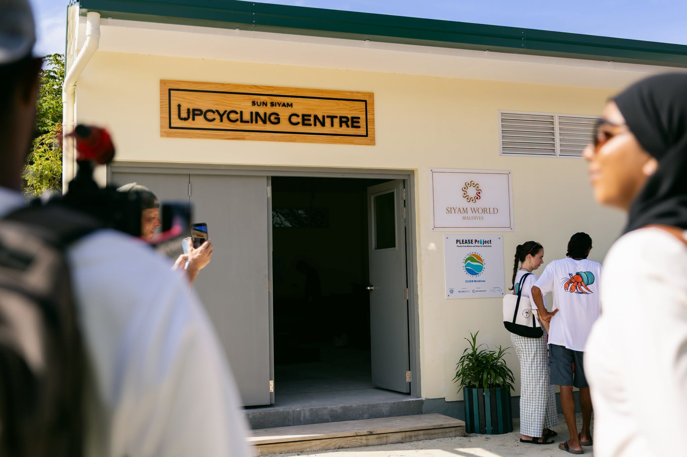
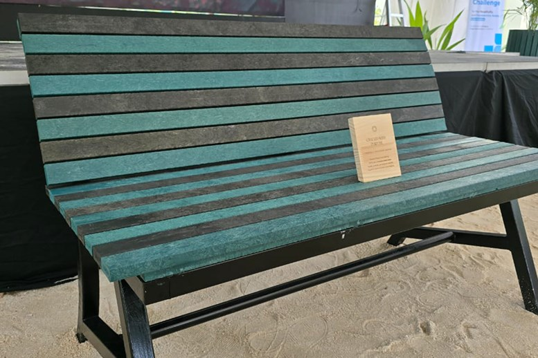

At Rashu Plastic Project, we are constantly looking for ways to strengthen local recycling initiatives and learn from organizations that are leading by example. During our recent visit to Siyam World as part of the Wreck to Reef event, we had the opportunity to tour their upcycling centre, one of the few resort-based facilities in the Maldives dedicated to transforming waste into valuable resources.
A Demonstration of What's Possible
From the moment we arrived, it was clear that the centre represents more than just waste management. It is a demonstration of how creativity, innovation, and commitment can turn environmental challenges into opportunities. The facility processes materials that would otherwise be discarded and gives them a new purpose through a variety of upcycling methods.
They turn crates into lumber which is then transformed into furniture such as benches, tables and plant pots.

Exchanging Ideas and Building Connections
As an organization that works to transform plastic waste into useful products, it was inspiring to see sustainability integrated into resort operations at this scale. The visit allowed us to exchange ideas, discuss challenges faced by island and tourism communities, and explore how local initiatives and the tourism sector can work together to reduce waste and promote circular economy solutions.
Tourism as a Force for Sustainability
The tourism industry plays a significant role in shaping environmental practices across the Maldives. Facilities such as Siyam World's upcycling centre demonstrate that resorts can move beyond traditional waste disposal methods and become active participants in sustainability and environmental education.

Grateful for Shared Knowledge
We are grateful to the Siyam World team for sharing their knowledge and giving us valuable insight into their sustainability efforts. As Rashu Plastic Project continues to grow, visits like this strengthen our commitment to reducing waste, engaging communities, and expanding circular economy solutions.
The future of waste management in the Maldives depends on collaboration between communities, businesses, resorts, and environmental organizations.
Our visit to Siyam World's upcycling centre showed that this progress is already underway, and we look forward to contributing to a cleaner, more sustainable future together.